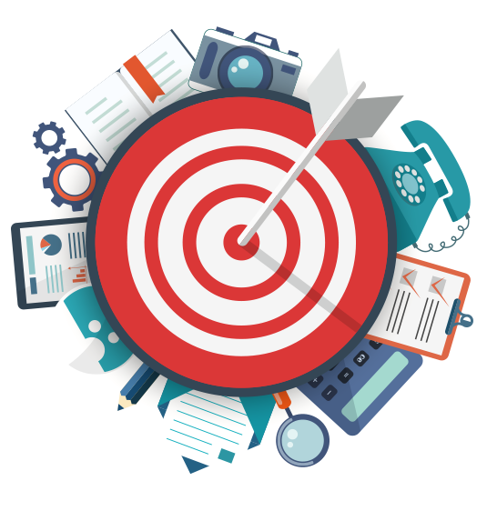

Conheça nosso objetivo
Case
Santa Catarina
A pesca da tainha é regulamentada em território nacional e em Santa Catarina a pesca industrial está proibida e os pescadores artesanais se sentem prejudicados com a redução da cota de 830t para 460t.
A Secretaria Aquicultura e Pesca estimou um prejuízo de 15 milhões de reais de forma direta na situação atual.
Em 2012 uma lei estadual declarou a tainha patrimônio cultural imaterial de todos os catarinenses.
Produto
Seaside Market
Espaço de integração entre peixeiros de pequna escala, comerciantes ou pessoas que desejam comprar em larga escala;
Compra será realizada e distribuida por parcerias realizadas com outras empresas de lojística;
Pagamentos realizados de maneiras tradiconais: cartão, boleto bancário e PIX
Foco

Sustentabilidade
O produtor na plataforma deverá informar a totalidade da quantidade pescada nos períodos permitidos pela legislação;
Autoridades realizarão curadoria;
Calibração entre quantidade liberada para pesca X custo
Resultado: retorno financeiro justo e um preço de venda suficiente para a subsistência da classe trabalhadora